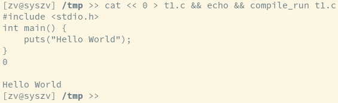

If you write a zshell function for compiling & running a piece of C code, you might begin with this:
compile_run () { local exepath="$(mktemp)" cc -g "$1" -o $exepath "$exepath" "$@" }
Which works as expected for well-behaved programs:

If your program contains a segmentation fault however, job control messages will be hidden from you as if your program printed no input at all.

You may have known that messages like [1] 21212 segmentation fault (core dumped) ./faulty aren't ordinary messages in the sense you can't capture them and they aren't generated by the program itself. They are actually generated by your shell trapping those signals before executing a program, which, should that program have issues, will run before your program terminates.
Shell-defined functions which run external programs (like compile_run) are considered to be running within the current shell however, so job status messages for the exit status of the function are not printed.